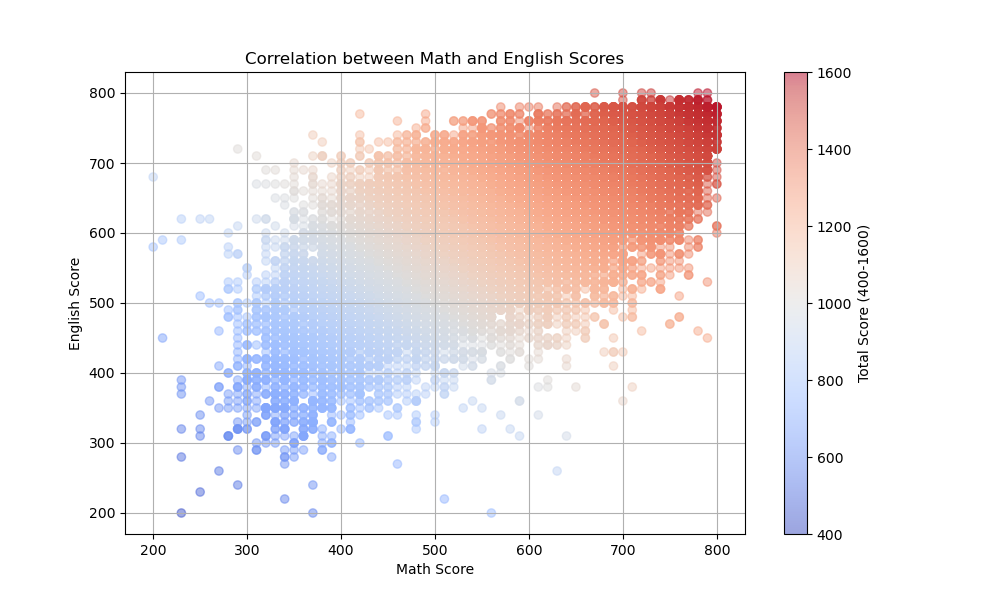
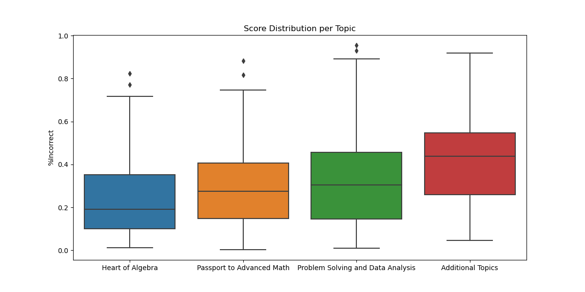
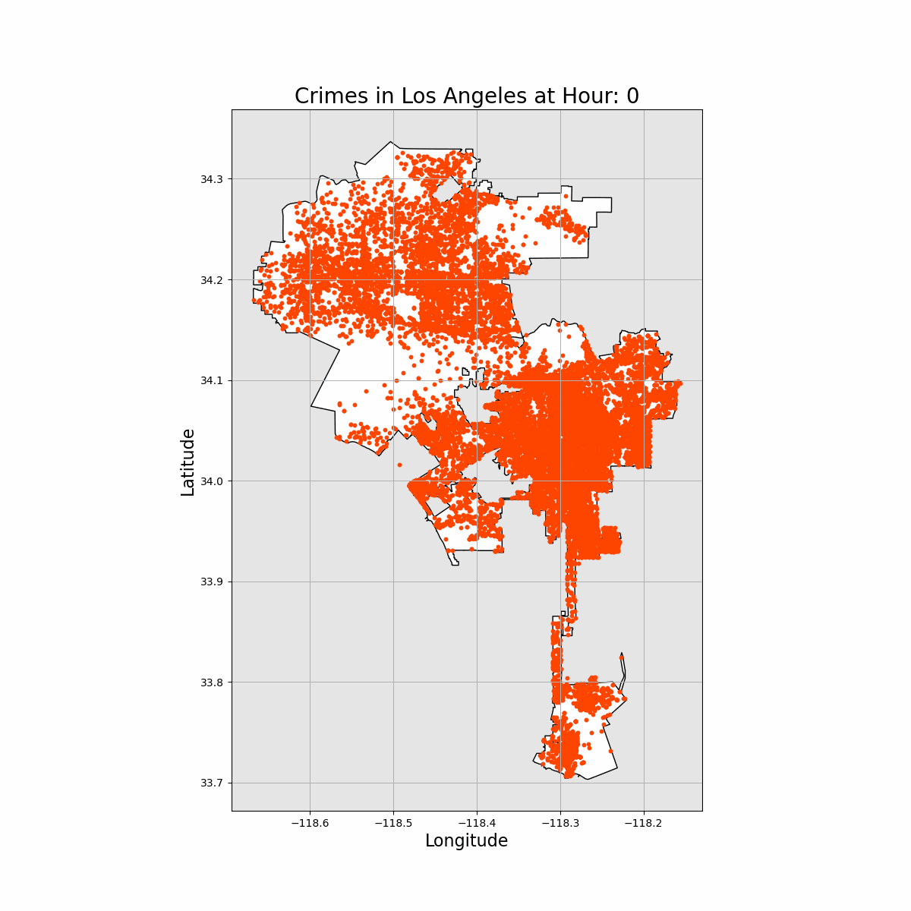
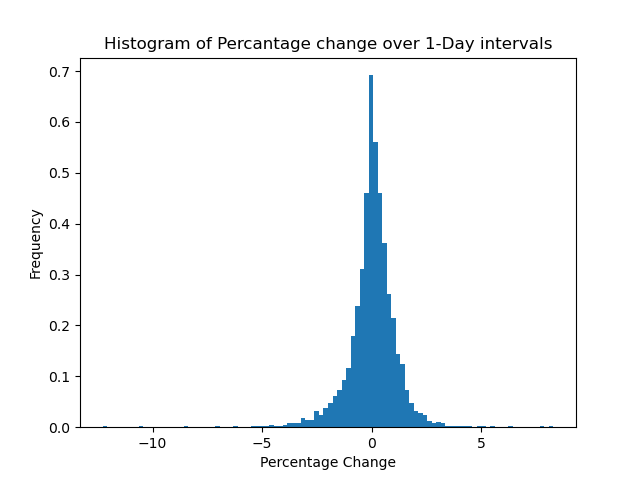
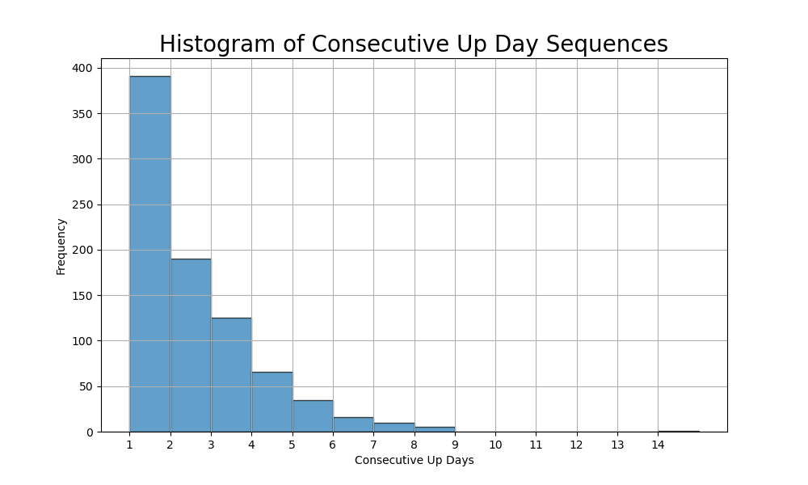

Brandon Washington
I recently graduated from Binghamton University with a B.S. in Applied Physics. I am skilled in statistical analysis, data visualization and passionate about using data to drive real-world decision making. The potential of Artificial Intelligence fascinates me I am committed to continuously building and integrating AI tools and technologies into my workflow to maximize productivity.
Programing Languages
Education
-
Binghamton University
Aug '20 - May '23
B.S. in Applied Physics
GPA: 3.69, Cum Laude
Certifications
Technical Skills
Projects
SAT Problem Recommender System
 I was inspired to start this project after tutoring high school students for their SAT Math Exam. In this project, I developed a content-based filtering algorithm to recommend to students the problems most suitable to them based on results from a diagnostic exam. View on GitHub
Predictive Policing for the City of Los Angeles

Understanding crime patterns is essential for effective Policing. In this project, I create an LSTM model capable of predicting where and when crime will most likely occur in the City of Los Angeles. View on GitHub
Predicting Price Moves of the S&P 500 with Deep Learning
 Predicting stock prices has traditionally been a challenge for retail investors and machine learning enthusiasts alike. In this project, I analyze several price features to determine the most suitable one's for price prediction and Implement a transformer model to simulate price moves. View on GitHub